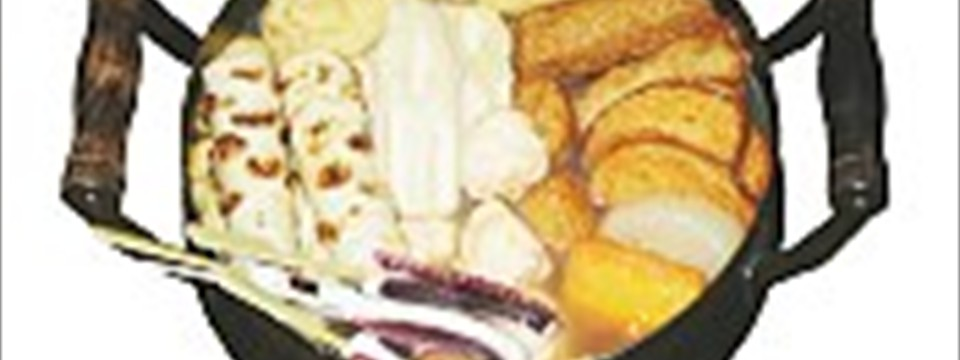

- The mastery of Japanese food relies on the freshest ingredients meticulously prepared. Seasonality is also a major factor in Japanese cuisine.
- The mastery of Japanese food relies on the freshest ingredients meticulously prepared. Seasonality is also a major factor in Japanese cuisine.
- 


 18
18